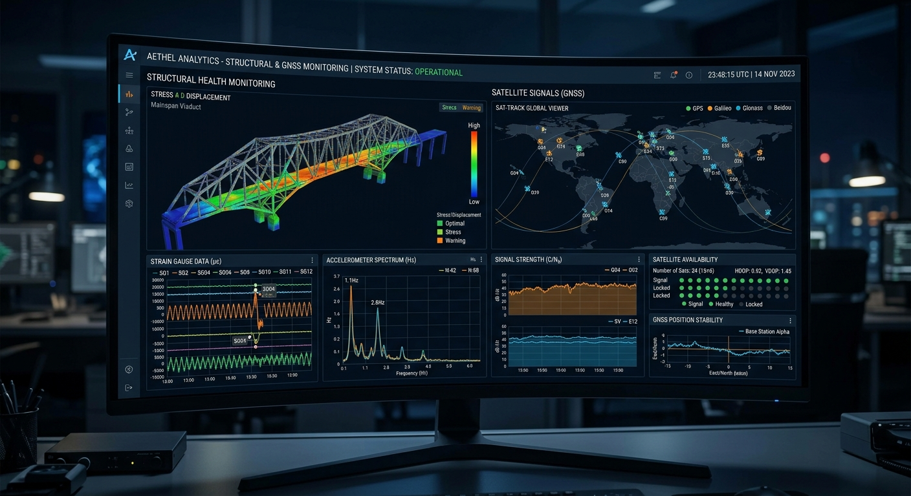

Structure IQ
Transforming a technical MVP into a human-centered SaaS platform for structural integrity monitoring
Project Brief
Structure IQ is an advanced SaaS platform that enables engineering specialists to monitor the structural integrity of bridges, buildings, and critical infrastructure using satellite-derived data. The challenge was to take a raw, technical MVP and transform it into a sophisticated professional tool that prioritizes precision and rapid decision-making.

The Discovery: Solving the "Context Gap"
The Discovery PhaseA Technical-First Problem
The original interface was designed by engineers, for engineers, resulting in a "technical-first" experience that created high cognitive load. Through guided user interviews and video-call walkthroughs with structural specialists, I identified a critical usability flaw: the Context Gap.
The Unified Mental Model
Users were forced to navigate between separate modules to correlate a sensor's physical status with its historical data graph. In high-stakes monitoring, this friction wasn't just annoying — it was a risk. My research proved that specialists needed a unified mental model where "Where it is" and "How it's performing" lived in the same space.

The UX Solution: A Unified Dashboard
Based on Discovery InsightsIntegrated Visualization
I redesigned the navigation to group sensor health and analytical graphs into a single, interactive view. This allows specialists to perform cross-functional checks without losing their place in the workflow.
Strategic Dark Mode
Recognizing that specialists often work in low-light control rooms or monitor high-contrast satellite imagery for long durations, I implemented a modern Dark Mode — reducing eye strain and allowing critical data anomalies to visually stand out.
Rapid Validation
We conducted iterative "Kickoff" and bi-weekly "Sync" sessions, presenting low-fidelity wireframes and then high-fidelity prototypes to the Structure IQ team — validating the new navigation flow and custom data visualizations before a single line of code was written.


The Outcome
We successfully delivered a "modern and robust" interface that bridged the gap between complex satellite telemetry and human-centered design. The result was a successful project handoff that moved Structure IQ from a rudimentary proof-of-concept to a market-ready platform that engineers actually enjoy using.
Success Metrics
Eliminated Context Loss
Unified sensor health and analytical graphs into a single interactive view, eliminating the fragmented navigation that caused specialists to lose critical context.
Reduced Time-to-Insight
High-contrast Dark Mode and integrated visualization reduced time-to-insight for structural safety checks — validated through iterative prototype sessions with the client team.